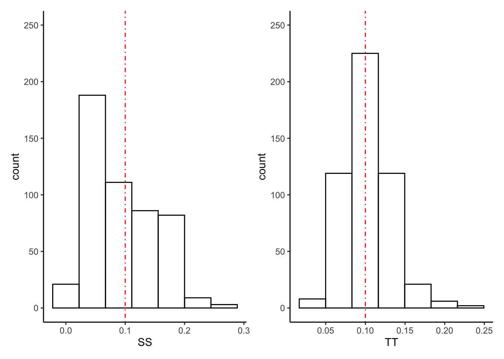

Chapter 4 Supplement to Chapters 17 and 19
This chapter implements much of the analysis shown in chapters 17 and 19 of A Modern Introduction to Probability and Statistics. R code is given for the simple textbook datasets used in the book, and then the concepts are illustrated on real data.
All datasets from the book can be downloaded here: https://www.tudelft.nl/en/eemcs/the-faculty/departments/applied-mathematics/applied-probability/education/mips/.
4.1 Statistical models (Chapter 17)
Most of the material from chapter 17 is a review of that from chapters 15 and 16, but in an important new context. You should be doing all exercises from chapter 17 using R, using the tools you have learned from chapters 15 and 16.
Here we will focus on the linear regression model. This chapter doesn’t cover
how these models are estimated, so here we will show how to use R to plot
regression lines. We’ll use ggplot2 to recreate Figure 17.8, and show how
to add “smooth” non-linear regression lines to plots as well.
4.1.1 Janka Hardness data
The Janka Hardness dataset was already discussed in Chapter 15/16. Since you did
the exercises from those chapters prescribed in this supplementary book, you
have already read these data into R:
## 24.7 484
## 24.8 427
## 27.3 413
## 28.4 517
## 28.4 549
## 29 648
## 30.3 587
## 32.7 704
## 35.6 979
## 38.5 914By printing it out on the command line, you can tell that the file is tab-delimited.
Use readr::read_delim() to read it in:
library(tidyverse)
janka <- readr::read_delim(
file = "data/MIPSdata/jankahardness.txt",
delim = "\t",
col_names = c("density","hardness"),
col_types = "nn"
)
glimpse(janka)## Observations: 36
## Variables: 2
## $ density <dbl> 24.7, 24.8, 27.3, 28.4, 28.4, 29.0, 30.3, 32.7, 35.6, 3…
## $ hardness <dbl> 484, 427, 413, 517, 549, 648, 587, 704, 979, 914, 1070,…Create a scatterplot with ggplot2:
jankascatter <- janka %>%
ggplot(aes(x = density,y = hardness)) +
theme_classic() +
geom_point() +
scale_x_continuous(breaks = seq(20,80,by=10)) +
scale_y_continuous(breaks = seq(0,3500,by=500)) +
coord_cartesian(xlim = c(20,80),ylim = c(0,3500)) +
labs(x = "Wood density",
y = "Hardness")
jankascatter
To add a line to a plot, use geom_abline(). We can use this to recreate the regression
line from Figure 17.8:

But how did the book calculate these values? We’ll answer this question in a later
chapter. But for now, it would still be nice to get the computer to compute these
values for us rather than typing them in manually. We can do this using the
geom_smooth() function in ggplot2:
The “lm” stands for “linear model” and the “se” stands for “standard error”; leaving this at its default of “TRUE” would add error bars to the line, which we’ll learn about later (give it a try though).
We can also add a non-linear curve to the plot using this technique. Most of the
approaches to doing non-linear regression involve breaking the data up into small
chunks based on the x-axis values, and then doing linear regression in each chunk
and joining the resulting lines. The “loess” non-linear regression line is an
example of this approach. It roughly stands for “local regression and smoothing
splines”. We can add this using ggplot2 as well:

See how it’s a bit more wiggly, but still pretty straight? The data really does look like it supports a linear relationship between density and hardness. This is not common in modern practice!
4.1.2 Extended example: TTC ridership revenues
Toronto’s population is growing over time. This puts strain on our outdated public transit system. But it should also lead to increased revenues. According to (https://globalnews.ca/news/1670796/how-does-the-ttcs-funding-compare-to-other-transit-agencies/)[a news article from a few years back], the TTC is the least-subsidized major transit agency in North America, which means that its operating budget is the most dependent on fare revenue out of any in all of the US and Canada. Tracking how ridership revenues are changing over time is very important.
The city does do this. Go to (https://www.toronto.ca/city-government/data-research-maps/toronto-progress-portal/)[
the City of Toronto Progress Portal] and type “TTC” and click on the box that says
“TTC Ridership Revenues” to see a report. You can download the data from here, but
since it’s a bit tricky to describe exactly how, I have posted the file
ttc-ridership-revenues.csv on Quercus. We are going to read these data into R
and analyze the relationship between year and revenue.
If you’re thinking “that sounds really easy, we just did that!”… just keep reading.
First, print the data out and count the number of rows on the command line:
## Year,Jan,Feb,Mar,Apr,May,Jun,Jul,Aug,Sep,Oct,Nov,Dec
## 2007 YTD Actual,$70600000,$131200000,$204600000,$264900000,$322000000,$395100000,$452100000,$507500000,$585600000,$646900000,$712500000,$774700000
## 2008 YTD Actual,$72700000,$137600000,$217500000,$278200000,$340600000,$419600000,$482400000,$544100000,$629000000,$696400000,$766600000,$837000000
## 2009 YTD Actual,$69300000,$135400000,$216600000,$280500000,$344000000,$422100000,$483400000,$543500000,$627200000,$693900000,$762400000,$834900000
## 2010 YTD Actual,$72200000,$143400000,$230700000,$302400000,$372500000,$459100000,$528800000,$595700000,$689100000,$764500000,$842000000,$929300000
## 2011 YTD Actual,$75300000,$150800000,$244400000,$318300000,$392400000,$484800000,$557300000,$625500000,$722000000,$799500000,$879100000,$969900000
## 2012 YTD Actual,$75500000,$154800000,$253900000,$331600000,$408300000,$507100000,$581800000,$654300000,$755800000,$835900000,$919100000,$1017600000
## 2013 YTD Actual,$93200000,$176600000,$278200000,$360300000,$439700000,$539700000,$617400000,$693500000,$799600000,$882500000,$968900000,$1052100000
## 2014 YTD Actual,$92200000,$178900000,$284400000,$367200000,$449700000,$552300000,$633200000,$712200000,$822000000,$907900000,$998200000,$1086500000
## 2015 YTD Actual,$90600000,$178200000,$284100000,$370500000,$455300000,$559600000,$641700000,$721400000,$833200000,$920800000,$1011600000,$1107300000
## 14 data/ttc-ridership-revenues.csvYikes! Real data is messy. This data isn’t even that messy and it still seems messy.
We see that the file is comma-separated and has a header. The first column is text and the others are… well, they’re supposed to be numeric, but they are stored in the file with dollar signs. WHY! This kind of thing is super annoying and super common.
We could remove the dollar signs from the text file directly using sed or a
similar UNIX-based tool, but I prefer whenever possible to keep all my analysis
on one platform. We’ll read it into R as-is and then parse and change datatypes
there:
# Read in the data
ridership <- readr::read_csv(
file = "data/ttc-ridership-revenues.csv",
col_names = TRUE, # Tells readr to read the column names from the first line of the file.
col_types = stringr::str_c(rep("c",13),collapse = "") # Read all 13 columns as "c"haracter
)
glimpse(ridership)## Observations: 13
## Variables: 13
## $ Year <chr> "2007 YTD Actual", "2008 YTD Actual", "2009 YTD Actual", "2…
## $ Jan <chr> "$70600000", "$72700000", "$69300000", "$72200000", "$75300…
## $ Feb <chr> "$131200000", "$137600000", "$135400000", "$143400000", "$1…
## $ Mar <chr> "$204600000", "$217500000", "$216600000", "$230700000", "$2…
## $ Apr <chr> "$264900000", "$278200000", "$280500000", "$302400000", "$3…
## $ May <chr> "$322000000", "$340600000", "$344000000", "$372500000", "$3…
## $ Jun <chr> "$395100000", "$419600000", "$422100000", "$459100000", "$4…
## $ Jul <chr> "$452100000", "$482400000", "$483400000", "$528800000", "$5…
## $ Aug <chr> "$507500000", "$544100000", "$543500000", "$595700000", "$6…
## $ Sep <chr> "$585600000", "$629000000", "$627200000", "$689100000", "$7…
## $ Oct <chr> "$646900000", "$696400000", "$693900000", "$764500000", "$7…
## $ Nov <chr> "$712500000", "$766600000", "$762400000", "$842000000", "$8…
## $ Dec <chr> "$774700000", "$837000000", "$834900000", "$929300000", "$9…This does not look like it’s in a form ready to analyze. Some problems:
- The
Yearhas unwanted text in it. We just want the number representing what year it is. - The revenue is stored across 12 columns, one for each month. We want the annual revenue for our analysis.
- The actual numeric revenue is stored as text with a dollar sign. We need to parse out the number part and convert to a numeric datatype before we can analyze it.
Problems 1 and 3 require a bit of text parsing; Problem 2 requires converting from “wide” to “long” format. Let’s do it:
# PROBLEM 1: Year
# To parse out only the number part, use a regular expression.
# Our string starts with a four digit number which starts with 20. We want to capture this number
# and nothing else.
# The ^ means "the start of the string".
# The [20]{2} means "a 0 or a 2, exactly twice"
# The [0-9]{2} means "anything from 0 - 9, exactly twice"
year_regex <- "^[20]{2}[0-9]{2}"
# Use stringr::str_extract to extract a substring matching the regular expression:
stringr::str_extract("2007 YTD Actual",year_regex)## [1] "2007"# PROBLEM 2: wide to long
# Use the tidyr::gather() function for "gather"ing columns and putting them
# into one column:
ridership %>%
tidyr::gather(month,revenue,Jan:Dec)## # A tibble: 156 x 3
## Year month revenue
## <chr> <chr> <chr>
## 1 2007 YTD Actual Jan $70600000
## 2 2008 YTD Actual Jan $72700000
## 3 2009 YTD Actual Jan $69300000
## 4 2010 YTD Actual Jan $72200000
## 5 2011 YTD Actual Jan $75300000
## 6 2012 YTD Actual Jan $75500000
## 7 2013 YTD Actual Jan $93200000
## 8 2014 YTD Actual Jan $92200000
## 9 2015 YTD Actual Jan $90600000
## 10 2016 YTD Actual Jan $90800000
## # … with 146 more rows# PROBLEM 3: removing the dollar sign
# Again, use text matching. Because $ is itself a special character,
# to match it, you have to "escape" it using a backslash
dollar_regex <- "\\$"
# Remove matching strings using stringr::str_remove()
stringr::str_remove("$1234",dollar_regex)## [1] "1234"# Now, combine all these into one data cleaning pipeline.
# Remember we have monthly revenue, so to get yearly revenue, we sum
# over months.
ridership_clean <- ridership %>%
tidyr::gather(month,revenue,Jan:Dec) %>% # "transmute" is like mutate, but it deletes all original columns
transmute(year = stringr::str_extract(Year,year_regex),
revenue = stringr::str_remove(revenue,dollar_regex)) %>%
mutate_at(c("year","revenue"),as.numeric) %>% # Turn both year and revenue into numeric variables
group_by(year) %>% # Sum revenue for each year to get yearly revenue
summarize(revenue = sum(revenue)) %>%
filter(year < 2019) # 2019 has incomplete data, so remove it
glimpse(ridership_clean)## Observations: 12
## Variables: 2
## $ year <dbl> 2007, 2008, 2009, 2010, 2011, 2012, 2013, 2014, 2015, 20…
## $ revenue <dbl> 5067700000, 5421700000, 5413200000, 5929700000, 62193000…That looks a lot better! As usual, you should run each line of code one by one to understand what is happening.
Because we went to the effort of cleaning the data, we can now plot it easily:
ridershipscatter <- ridership_clean %>%
ggplot(aes(x = year,y = revenue)) +
theme_classic() +
geom_point() +
labs(title = "Annual ridership revenues for the TTC",
x = "Year",
y = "Revenue") +
scale_y_continuous(labels = scales::dollar_format()) # Make the y-axis pretty
ridershipscatter
Add a linear and non-linear regression line:
leftplot <- ridershipscatter +
geom_smooth(method = "lm",size = .5,se = FALSE,colour = "black") +
labs(subtitle = "Linear regression line")
rightplot <- ridershipscatter +
geom_smooth(method = "loess",size = .5,se = FALSE,colour = "black") +
labs(subtitle = "Non-linear regression line",y = "")
cowplot::plot_grid(leftplot,
rightplot + theme(axis.text.y = element_blank()), # Take away the second plot's y-axis
nrow=1)
Exercise: re-do this analysis but don’t sum over month. This will give 12 points per year on the plot. Do one linear regression per month. Recreate the following plot yourself:

To do this, you have to create a dataset that looks like this:
## Observations: 144
## Variables: 3
## $ month <chr> "Jan", "Jan", "Jan", "Jan", "Jan", "Jan", "Jan", "Jan", …
## $ revenue <dbl> 70600000, 72700000, 69300000, 72200000, 75300000, 755000…
## $ year <dbl> 2007, 2008, 2009, 2010, 2011, 2012, 2013, 2014, 2015, 20…You should make the following modifications:
- Replace
transmutewithmutateso you don’t delete themonthcolumn. - Replace
aes(x = year,y = revenue)withaes(x = year,y = revenue,group = month,colour = month)in the call toggplot. - Don’t sum over months.
4.2 Unbiased Estimators (Chapter 19)
Unbiasedness is one property of an estimator that the book claims is attractive. Let’s investigate this by recreating some of their simulations.
4.2.1 Simulated network data
Figure 19.1 shows histograms of simulations of samples \(X_{1},\ldots,X_{n}\) of size \(n=30\) from a \(X\sim\text{Poisson}(\log 10)\) distribution. We want to estimate the parameter \(p_{0}\), which is the probability that \(X = 0\): \[\begin{equation} p_{0} = P(X = 0) = e^{-\lambda} \end{equation}\] where \(\lambda = E(X) = \log 10\) in this example. The book suggests two estimators, \(S = \sum_{i=1}^{n}\mathbb{1}(X_{i} = 0)\) and \(T = e^{-\bar{X}_{n}}\). \(S\) corresponds to calculating the sample proportion of times \(X_{i}=0\), and \(T\) corresponds to estimating the population mean \(\lambda\) using the sample mean \(\bar{X}_{n}\) and then plugging this in to the actual formula for the value \(p_{0}\). These both come from somewhere, and we’ll see this when we talk about Maximum Likelihood. For now, just take them as both being candidates for an estimator of \(p_{0}\).
Let’s investigate their sampling distributions by recreating the simulation from the book:
set.seed(6574564)
# Simulate 500 random samples of size 30 from a poisson(log(10))
# You need the purrr package, part of the tidyverse, for the map() function
N <- 500
n <- 30
lambda <- log(10)
p0 <- exp(-lambda) # True value of p0
# Simulate the samples
samplelist <- 1:N %>%
map(~rpois(n,lambda))
# Write functions to compute each estimator
compute_S <- function(samp) mean(samp == 0)
compute_T <- function(samp) exp(-mean(samp))
# Compute them and then store the results in a tibble()
estimators <- samplelist %>%
map(~c(S = compute_S(.x),T = compute_T(.x))) %>%
reduce(bind_rows)
glimpse(estimators)## Observations: 500
## Variables: 2
## $ S <dbl> 0.10000000, 0.16666667, 0.16666667, 0.13333333, 0.03333333, 0.…
## $ T <dbl> 0.08774387, 0.12245643, 0.13089846, 0.14956862, 0.08774387, 0.…# Create the plots
plt_S <- estimators %>%
ggplot(aes(x = S)) +
theme_classic() +
geom_histogram(colour = "black",fill = "transparent",bins = 7) +
coord_cartesian(ylim = c(0,250)) +
geom_vline(xintercept = p0,colour = "red",linetype = "dotdash")
plt_T <- estimators %>%
ggplot(aes(x = T)) +
theme_classic() +
geom_histogram(colour = "black",fill = "transparent",bins = 7) +
coord_cartesian(ylim = c(0,250)) +
geom_vline(xintercept = p0,colour = "red",linetype = "dotdash")
cowplot::plot_grid(plt_S,plt_T,nrow=1)
## # A tibble: 1 x 2
## S T
## <dbl> <dbl>
## 1 0.101 0.103Exercise: \(S\) is unbiased and \(T\) is biased, as shown in the book. Which estimator would you prefer? Compute a five number summary for \(S\) and \(T\) from our simulations, recreating the following:
## Min. 1st Qu. Median Mean 3rd Qu. Max.
## 0.00000 0.06667 0.10000 0.10140 0.13333 0.26667## Min. 1st Qu. Median Mean 3rd Qu. Max.
## 0.03122 0.08209 0.10026 0.10346 0.12246 0.23069Do you see any meaningful differences? Do the sampling distributions of \(S\) and \(T\) concentrate around \(p0\) in the same way?
Now, compute the mode (most frequently-observed value) of \(S\) and \(T\). You should get the following:
mode_S <- estimators %>%
group_by(S) %>%
summarize(cnt = n()) %>%
arrange(desc(cnt)) %>%
slice(1) %>%
pull(S)
mode_T <- estimators %>%
group_by(T) %>%
summarize(cnt = n()) %>%
arrange(desc(cnt)) %>%
slice(1) %>%
pull(T)
cat("The mode of S is ",mode_S,"\n")## The mode of S is 0.06666667## The mode of T is 0.09697197(You’re going to have to figure out how to compute a mode in R. That’s part of
the exercise).
What do you think about this? Does this contradict \(S\) being unbiased and \(T\) being biased? Does it change your opinion about which is a better estimator?
Finally, compute the square root of the average squared distance of \(S\) and \(T\) from the true value \(p_{0}\). You should get:
## # A tibble: 1 x 2
## S T
## <dbl> <dbl>
## 1 0.0550 0.0299We will see shortly that this quantity, the mean-squared error of an estimator, is much more representative of the quality of an estimator than the bias on its own. Note, of course, that since it depends on the true value, it can’t ever be computed in a real data analysis. It’s a mathematical construct.